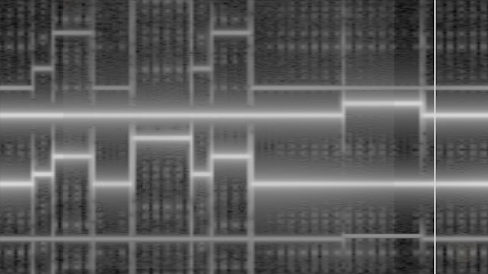

August, 2020

Coralina (8')
Produced by Matías Serrano in 2020
Work created in the workshop "Mujeres al borde del ruido" ("Women on the Edge of Noise"), led by Laura Zapata and Juliana Ortigoza, through Plataforma Bogotá
Work created in Pure Data, based on the slow transitions of Eliane Radigue and the activation of the third ear by Maryanne Amacher. The sonic narrative moves between both, connecting slow sequencers and frequencies extracted from a gamelan scale.
+info on the workshop at the website.